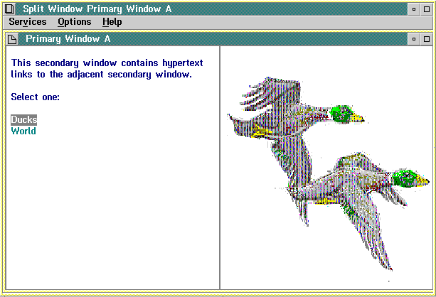
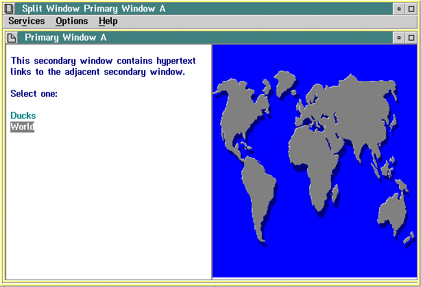
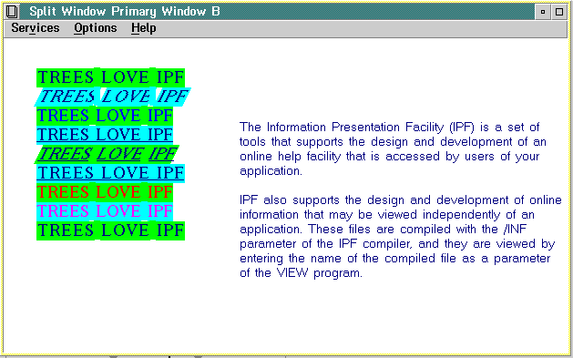

In the examples, each secondary window heading has the hide, noprint, and nosearch attributes. The hide attribute prevents an entry from appearing in the Contents window. You do not want a secondary window (in a split-window arrangement) to be displayed by itself; you want it displayed only when the Contents entry for its primary window is selected.
The nosearch attribute prevents the title string of the secondary window from being listed as an entry in the Search Results window. The Search option of IPF also searches the secondary window (for a word or phrase) because of the link definition in the primary window; however, only the title string of the primary window is returned in the Search Results window.
The Print option of IPF enables the user to print one or more topics, the index, or the table of contents. The noprint attribute in a primary-window heading prevents the contents of a secondary window from being printed. Secondary windows are printed as part of their primary window. The contents of secondary windows are printed only in the order in which the link definitions appear in the primary-window definition.
None of the primary-window heading tags specifies a group number with the group= attribute, so IPF assigns 0 (the default) as the group number of each. The clear attribute causes the screen to be cleared of windows before each split window is displayed.
:h1 res=016 scroll=none clear.
Primary Window A
:link reftype=hd res=017 auto split group=10
vpx=left vpy=top vpcx=50% vpcy=100%
rules=border scroll=none titlebar=none.
:link reftype=hd res=018 auto split group=11
vpx=right vpy=top vpcx=50% vpcy=100%
rules=border scroll=none titlebar=none.
:h2 res=017 hide nosearch noprint.Dummy
:p.
This secondary window contains hypertext links
to the adjacent secondary window.
:p.
Select one:
:sl compact.
:li.:link reftype=hd res=018 split group=11
vpx=right vpy=top vpcx=50% vpcy=100%
rules=border scroll=none titlebar=none.
Ducks
:elink.
:li.:link reftype=hd res=019 split group=11
vpx=right vpy=top vpcx=50% vpcy=100%
rules=border scroll=none titlebar=none.
World
:elink.
:esl.
:h2 res=018 hide nosearch noprint.Dummy
:artwork name='ducks.bmp' fit.
:h2 res=019 hide nosearch noprint.Dummy
:p.
:artwork name='world.bmp' fit.
Here are both views of the compiled version of Primary Window A.

Example of a split window with an automatic link. The window on the right is displayed automatically when "Primary Window A" is selected from the Contents window.

Example of a split window with hypertext link. The window on the right is displayed when the second hypertext link is selected.
:h1 res=022 scroll=none titlebar=none rules=none clear.
Primary Window B
:link reftype=hd res=023 auto split group=10
vpx=left vpy=top vpcx=40% vpcy=100%
scroll=none titlebar=none rules=none.
:link reftype=hd res=024 auto split group=11
vpx=right vpy=top vpcx=60% vpcy=20%
scroll=none titlebar=none rules=none.
:link reftype=hd res=025 auto split group=12
vpx=right vpy=bottom vpcx=60% vpcy=80%
scroll=none titlebar=none rules=none.
:h2 res=023 hide nosearch noprint.Dummy
:lm margin=5.
:rm margin=2.
:p.
:font facename='Tms Rmn' size=24x12.
:color bc=green.:hp2.TREES LOVE IPF:ehp2.
:color bc=cyan.:hp3.TREES LOVE IPF:ehp3.
:color bc=green.:hp4.TREES LOVE IPF:ehp4.
:color bc=cyan.:hp5.TREES LOVE IPF:ehp5.
:color bc=green.:hp6.TREES LOVE IPF:ehp6.
:color bc=cyan.:hp7.TREES LOVE IPF:ehp7.
:color bc=green.:hp4.TREES LOVE IPF:ehp4.
:color bc=cyan.:hp3.TREES LOVE IPF:ehp3.
:color bc=green.:hp2.TREES LOVE IPF:ehp2.
:h2 res=024 hide nosearch noprint.Dummy
:p.
:h2 res=025 hide rules=none nosearch noprint.Dummy
:rm margin=3.
:font facename='Helv' size=18x9.
:p.
The Information Presentation Facility (IPF) is a set of tools
that supports the design and development of an online help
facility that is accessed by users of your application.
:p.
IPF also supports the design and development of online
information that may be viewed independently of an application.
These files are compiled with the /INF parameter of the IPF
compiler, and they are viewed by entering the name of
the compiled file as a parameter of the VIEW program.
Here is the compiled version of Primary Window B.

Example of a split window without window controls. You cannot see the boundaries of the three windows because the window controls were eliminated.